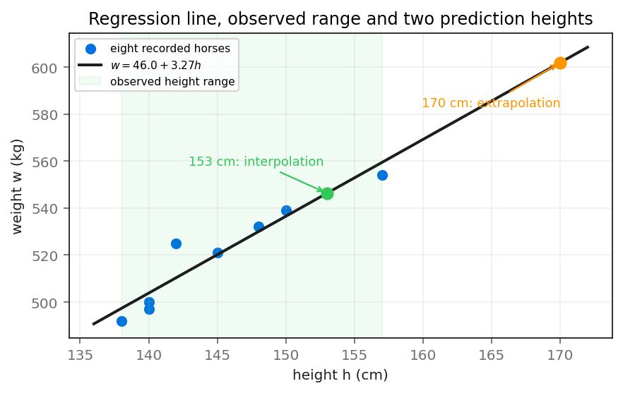

A biologist is studying horses. The biologist records the height, $h$ cm, and the weight, $w$ kg, of 8 horses. The table below shows the biologist’s results.
Height $h$ (cm) Weight $w$ (kg) 140 500 145 521 150 539 157 554 138 492 140 497 148 532 142 525 [You may use $\sum h=1160$ $\sum w=4160$ $\sum hw=604135$ $\sum w^2=2166600$ $S_{hh}=286$]
(a) Calculate the value of $S_{hw}$ and the value of $S_{ww}$ (3)
(b) Calculate the value of the product moment correlation coefficient between $h$ and $w$ (2)
(c) Show that the equation of the regression line of $w$ on $h$ can be written as $w=46.0+3.27h$, where the values of the intercept and gradient are given to 3 significant figures. (3)
(d) Give an interpretation, in context, of the gradient of the regression line. (1)
Using the equation of the regression line in part (c), estimate the weight of a horse with a height of
(e) (i) 153 cm
(ii) 170 cm (2)(f) State, giving a reason, which of the two estimates found in part (e) would give the more reliable estimate. (1)
Status: (a), (c), (e) accepted; (b), (d), (f) corrected or strengthened during review.
[12 marks: (a)3, (b)2, (c)3, (d)1, (e)2, (f)1]
The strategy is to compute the corrected sums of products directly from the supplied raw totals. Separate the height–weight cross-deviation $S_{hw}$ from the weight deviation sum $S_{ww}$, because each uses a different raw total even though both subtract a mean-correction term.
Regression and correlation use deviations about the sample means, not uncentred totals. The shortcut identities convert the supplied $\sum hw$ and $\sum w^2$ into centred sums without recalculating eight individual deviations. With $n=8$, the correction term is always a product of totals divided by 8.
Use $$S_{hw}=\sum hw-\frac{(\sum h)(\sum w)}{n},\qquad S_{ww}=\sum w^2-\frac{(\sum w)^2}{n}.$$ The subscripts identify which totals belong in each expression and prevent accidentally using $S_{hh}=286$ as a raw sum.
The lesson evidence says part (a) was accepted. No learner mistake should be invented here. The neutral common trap is confusing $S_{ww}$ with $\sum w^2$; the former measures spread about the mean, while the latter is an uncentred raw total and is far larger.
The supplied totals also identify the mean point before regression: $\bar h=1160/8=145$ and $\bar w=4160/8=520$. These means explain the correction products $8\bar h\bar w=603200$ and $8\bar w^2=2163200$. Seeing each subtraction as raw total minus its mean-generated baseline gives the centred sums a statistical meaning beyond calculator bookkeeping.
The setup therefore stops at the labelled pair S_hw=935 and S_ww=3400, ready for correlation. Transfer this corrected-sum route by pairing each raw total with its own mean correction and checking the reverse addition.
Substitute all supplied totals: $$S_{hw}=604135-\frac{1160\times4160}{8}=604135-603200=\boxed{935}.$$ Also $$S_{ww}=2166600-\frac{4160^2}{8}=2166600-2163200=\boxed{3400}.$$ The intermediate correction values are essential: they show that the small centred sums arise by subtracting two large, close quantities rather than by rounding.
Execute the two corrections in separate labelled calculator lines because their raw totals differ. The important transition is subtracting each large mean-product correction from its matching raw total; swapping 604135 and 2166600 would destroy the subscripts while still producing calculator output. Part (a) was accepted, so there is no evidenced learner error here; only the neutral risk of confusing a raw square total with a centred sum can be stated. Check by reversing both subtractions: 603200+935 recovers 604135 and 2163200+3400 recovers 2166600 exactly. The stopping point is the pair S_hw=935 and S_ww=3400, retained without rounding for later parts. In another data-summary question, write n and the two correction terms first, then audit units and subscripts before entering numbers.
Use the product moment correlation coefficient formula with the centred sums from part (a) and the printed $S_{hh}=286$. Preserve the calculator value until the final line, then apply the paper-wide instruction to report the inexact decimal to three significant figures.
PMCC measures the strength and direction of a linear association. The numerator $S_{hw}$ carries the sign of the association, while the denominator standardises by the two spreads. All three required centred sums are now available, so this is a direct formula application rather than a fresh calculation from eight pairs.
Use $$r=\frac{S_{hw}}{\sqrt{S_{hh}S_{ww}}}.$$ This formula requires $S_{hh}$, not $\sum h^2$, and $S_{ww}$, not $\sum w^2$. For any valid data set, $-1\leq r\leq1$, which provides a built-in range check.
Direct lesson evidence records exactly those two slips: the student miscopied 286 and rounded the correlation to two significant figures. It does not support any claim that 286 was a horse-weight prediction. The correction is therefore evidence-grounded and narrowly stated.
Before evaluation, estimate the denominator's scale: $\sqrt{286\times3400}$ is just under 1000, while the numerator is 935, so a positive coefficient slightly below one is expected. This advance magnitude estimate is specific to the printed centred sums and immediately rejects a misplaced square root, the miscopied 289, or a result rounded to an impossible value above one.
This framing fixes the reportable answer as r=0.948 to three significant figures. Transfer it by predicting sign and scale before evaluation, then auditing source digits, the interval from −1 to 1 and the paper’s precision rule.
Substitute without premature rounding: $$r=\frac{935}{\sqrt{286\times3400}}=\frac{935}{\sqrt{972400}}=0.948176\ldots.$$ The October 2025 paper requires inexact answers to three significant figures unless otherwise stated, so $$\boxed{r=0.948\text{ (3 s.f.)}}.$$ Keeping 0.948176 on the calculator until the final rounding avoids shifting the last digit.
The execution depends on carrying 286 exactly into the square-root denominator and preserving the unrounded display until reporting. The difficult transition is precision control: 0.948176… becomes 0.948 at three significant figures, whereas 0.95 has only two. Lesson evidence specifically supports two slips—miscopying 286 and under-reporting significant figures—and supports no claim about misunderstanding the meaning of correlation. Check the sign against the upward horse pattern, check the magnitude is no greater than one, and estimate the denominator as just under 1000 so a quotient just under 0.95 is credible. The answer stops at r=0.948 (3 s.f.). For transfer, copy supplied centred sums into a labelled formula, predict sign and scale, then perform range and rounding checks independently.
For the regression of weight $w$ on height $h$, calculate the gradient from the cross-deviation divided by the explanatory-variable deviation, then use the point $(\bar h,\bar w)$ to find the intercept. State the model with coefficients rounded exactly as requested.
A least-squares line of $w$ on $h$ predicts the response $w$ from the explanatory variable $h$. Therefore its slope is $S_{hw}/S_{hh}$, not $S_{hw}/S_{ww}$. The fitted line always passes through the mean point, which determines the intercept once the slope is known.
Use $$b=\frac{S_{hw}}{S_{hh}},\qquad a=\bar w-b\bar h,\qquad w=a+bh,$$ with $\bar h=\sum h/n$ and $\bar w=\sum w/n$. Formula-first labelling makes the direction of regression explicit.
The lesson evidence records part (c) as accepted, so no student error belongs here. A neutral regression trap is rounding $b$ before calculating $a$; doing so can move the intercept. Keep the full calculator slope for $a$, then display both requested coefficients to three significant figures.
The source ordering ‘$w$ on $h$’ fixes response and explanatory roles. The ratio $935/286$ has units kilograms per centimetre, while $935/3400$ would have reciprocal orientation and could not support a weight prediction from height. Unit direction therefore independently confirms the correct denominator before the intercept calculation uses the mean point.
The framed route stops at w=46.0+3.27h after the unrounded mean-point calculation. Transfer by reading ‘response on explanatory’, selecting the explanatory centred sum as denominator, and checking that the line passes through the mean point.
Calculate $\bar h=1160/8=145$ and $\bar w=4160/8=520$. Then $$b=\frac{935}{286}=3.269230\ldots,$$ and, using the unrounded slope for the calculation, $$a=520-(3.269230\ldots)(145)=45.9615\ldots.$$ To three significant figures these are $b=3.27$ and $a=46.0$, so $$\boxed{w=46.0+3.27h}.$$

Work in the stated direction, weight on height. That wording makes height the explanatory variable and fixes S_hh as the slope denominator. The difficult transition is using the full 935/286 value when finding the intercept; rounding the slope to 3.27 too early shifts the mean-point calculation. This part was accepted, so no personal failure should be inferred; premature rounding is only a general diagnostic. Check the unrounded line at h=145: it returns the mean weight 520 exactly, while the displayed rounded line returns 520.15, an expected small discrepancy. The required stopping point is w=46.0+3.27h with both coefficients at three significant figures. On another regression, use units to verify direction, preserve internal precision, and test the fitted line against the sample mean point.
Translate the numerical gradient into an average rate in the variables and units of the context. Name both height and weight, state the one-unit increase in height, and connect it to the predicted change in weight. Do not replace the requested gradient interpretation with a general correlation statement.
In $w=46.0+3.27h$, the coefficient of $h$ is the change in predicted $w$ for a one-unit increase in $h$. Since $h$ is measured in centimetres and $w$ in kilograms, the gradient has units kilograms per centimetre and describes the fitted average relationship.
For a line $y=a+bx$, the gradient is $b=\Delta y/\Delta x$. Here $b=3.27\text{ kg cm}^{-1}$. The word ‘interpret’ requires this rate to be expressed in ordinary context, not merely copied as the symbol $b$.
The lesson evidence records that the student gave a generic relationship statement and the tutor required the contextual rate. This diagnosis is specific to the observed response. It should not be broadened into a claim that the student misunderstood all regression or that an individual horse must gain exactly this amount.
The finite-difference identity removes any temptation to interpret the intercept instead: increasing $h$ from an arbitrary value to $h+1$ cancels both copies of 46.0 and leaves exactly 3.27. This source-specific cancellation proves why the answer must concern a one-centimetre change. The intercept would describe the model at zero height and is neither requested nor sensible for these horses.
The source-specific endpoint is an average predicted increase of 3.27 kg per 1 cm. Transfer this interpretation by naming both variables, both units, direction and the statistical qualifier rather than substituting a generic association statement.
A one-centimetre increase changes the fitted value by $$w(h+1)-w(h)=[46.0+3.27(h+1)]-[46.0+3.27h]=3.27.$$ Therefore: on average, for each 1 cm increase in a horse’s height, its predicted weight increases by $\boxed{3.27\text{ kg}}$. ‘On average’ signals a statistical model rather than a deterministic biological law.
Turn the coefficient into a finite difference so the contextual sentence cannot reverse the variables: increasing h by one cancels the two intercepts and leaves 3.27 kilograms. The difficult move is distinguishing a rate from a correlation description. Evidence says the original response was generic and the tutor requested the contextual rate; it does not show that the learner thought kilograms measured height or that every horse changes deterministically. Check dimensions: response units divided by explanatory units gives kg per cm, and the positive sign agrees with the fitted line. Stop with the average predicted 3.27 kg increase for each 1 cm increase in height. Transfer this by naming the explanatory change, predicted response change, both units, and the statistical qualifier ‘on average’.
Substitute each requested height separately into the printed regression equation, retain the calculator outputs, and apply the three-significant-figure convention. Label the two estimates so they cannot be interchanged and keep kilograms attached to the reported predictions.
The question explicitly says to use the equation from part (c). A regression estimate is obtained by evaluating the fitted response at the stated explanatory value; no new correlation or line calculation is needed. Both heights use the same model but lie in different reliability regions considered in part (f).
For a prediction at height $h_0$, use $\hat w=46.0+3.27h_0$. The hat indicates a model estimate rather than an observed weight. The paper-wide rule requires inexact answers to three significant figures unless otherwise stated.
The lesson evidence records the numerical estimates as correct. No learner error is attached to this part. A neutral common trap is rounding the model coefficients again or using 153 and 170 as weights; the units in the source show they are heights supplied to the $h$ input.
Keep a two-row prediction ledger headed 153 and 170. For 153, the gradient contribution is 500.31 before adding 46.0; for 170 it is 555.9 before the same intercept. These intermediate values expose swapped inputs and make the final ordering inevitable. They also preserve 546.31 and 601.9 until the single final rounding operation required by the paper.
The setup anticipates the labelled stopping values 546 kg at 153 cm and 602 kg at 170 cm. Transfer by writing a separate model-evaluation line for every input and applying the requested rounding only after the unrounded outputs are retained.
For 153 cm, $$\hat w=46.0+3.27(153)=46.0+500.31=546.31\text{ kg},$$ hence $\boxed{546\text{ kg}}$ to three significant figures. For 170 cm, $$\hat w=46.0+3.27(170)=46.0+555.9=601.9\text{ kg},$$ hence $\boxed{602\text{ kg}}$ to three significant figures. Keep 601.9 until rounding; writing 601 would round in the wrong direction.
Run two independent evaluations of the same fitted function and keep their labels attached throughout. The difficult transition is not the arithmetic but separating calculation from reliability: 170 cm may be substituted correctly even though it is later judged an extrapolation. Lesson evidence records both estimates as numerically correct, so no error diagnosis is warranted; swapped inputs or early rounding are only neutral checks. Verify monotonic order: because the slope is positive and 170 exceeds 153, the second predicted weight must exceed the first. The stopping answers are 546 kg and 602 kg to three significant figures, after retaining 546.31 and 601.9. For a new prediction task, show one substitution line per input, retain calculator precision, attach units, and postpone domain judgement until explicitly requested.
Compare each requested height with the observed height range and name the relevant statistical ideas. Select the estimate made inside the range as more reliable, while explaining that the outside-range estimate assumes the fitted linear pattern continues beyond the data.
Reliability depends on how far a prediction extends from the explanatory values used to fit the line. The recorded heights range from 138 cm to 157 cm. Thus 153 cm lies among observed heights, whereas 170 cm lies beyond the maximum; this is a domain-of-data judgement, not a comparison of predicted weights.
Interpolation means predicting for an explanatory value within the observed range; extrapolation means predicting outside it. A regression model is empirically supported over the data range, while its form beyond that range is an untested continuation and may fail if the relationship bends or changes.
The lesson evidence says the reliability idea was substantially understood but the explicit terms interpolation and extrapolation were strengthened. That supports a wording diagnosis, not a claim of numerical error. The card therefore preserves the reviewed-with-prompting status.
Place the inputs on the observed interval rather than judging the outputs: $138\le153\le157$ but $170>157$. The first inequality is direct evidence for interpolation; the second measures a 13 cm extension beyond the largest observed horse. This domain comparison is the source-specific reason for preferring one estimate and remains valid even though both numerical substitutions were calculated correctly.
The stopping judgement is that 153 cm gives the more reliable estimate because it is interpolation; 170 cm is extrapolation. Transfer by placing explanatory inputs, not predicted responses, against the observed explanatory range.
The range is $138\leq h\leq157$. Since $153$ satisfies this interval, the 546 kg estimate is interpolation. Since $170>157$, the 602 kg estimate is extrapolation. Therefore the $\boxed{153\text{ cm estimate is more reliable}}$ because it is interpolation within the observed height range; the 170 cm estimate is less reliable because it extrapolates.
Place 153 and 170 on the original height interval 138 to 157 before looking at the predicted weights. The difficult transition is selecting the explanatory axis: comparing 546 and 602 with observed weights would answer the wrong reliability question. Evidence supports that the learner’s idea was substantially present and that the terms interpolation and extrapolation were strengthened; it does not support a numerical-error claim. Check the inequalities 138≤153≤157 and 170>157, noting that 170 is 13 cm above the observed maximum. The answer stops with the 153 cm estimate as more reliable because it interpolates, while the 170 cm estimate extrapolates. Transfer by testing each input against the fitted data domain even when correlation is strong.